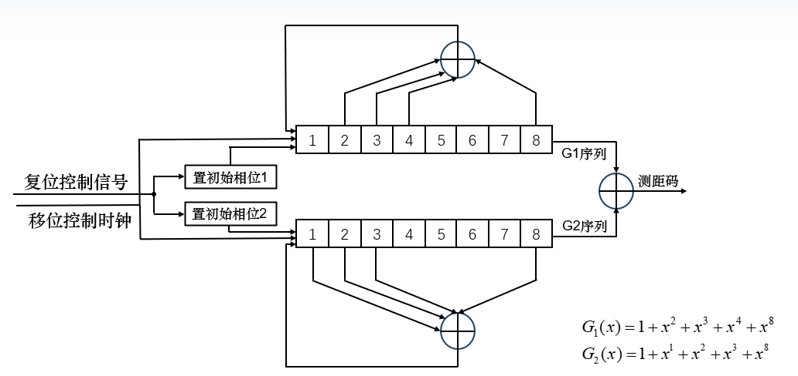
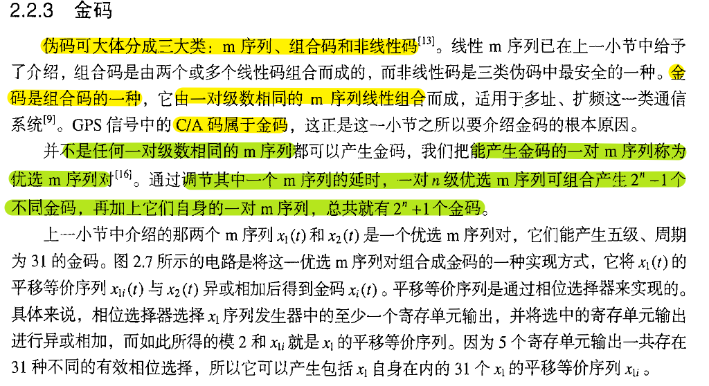
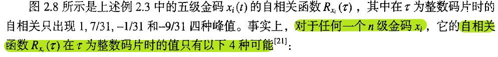
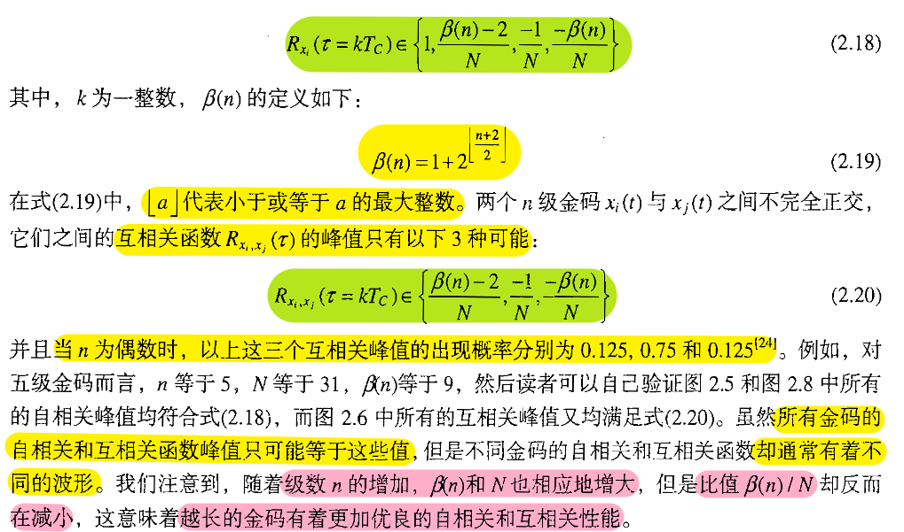
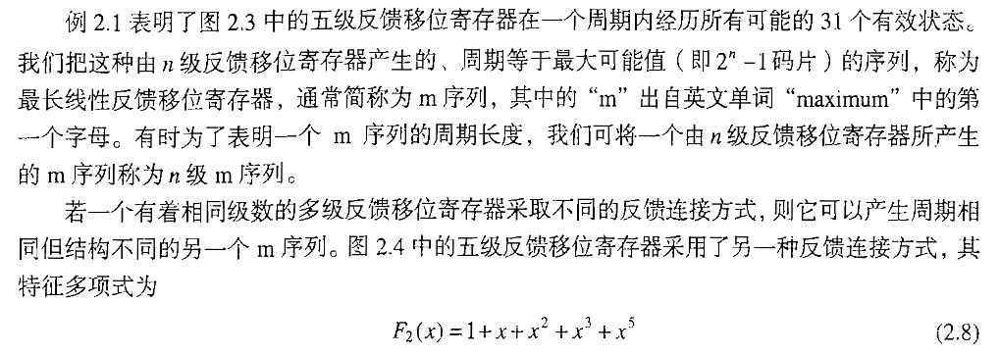
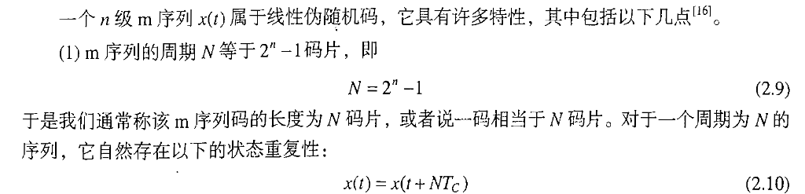
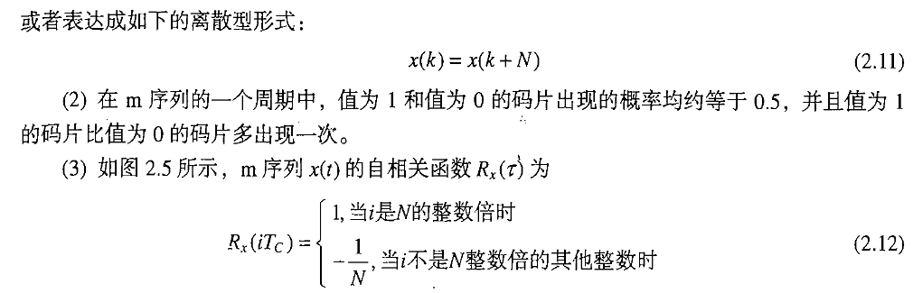
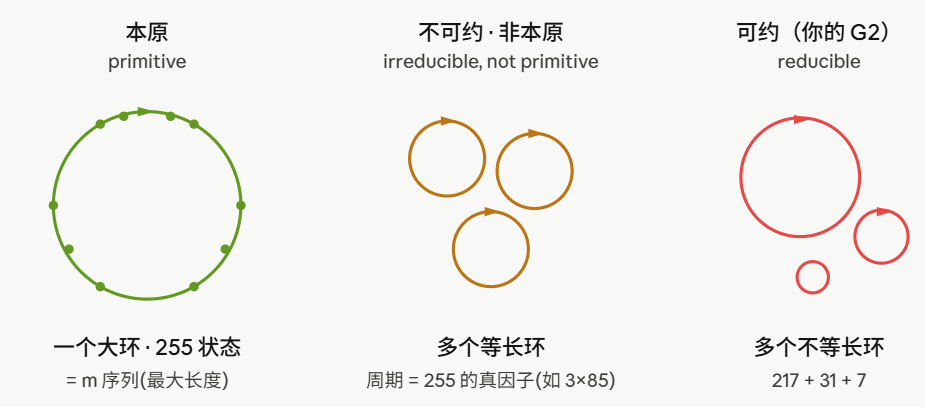

8bit LFSR生成PRN码
\[G_1(x)=1+x^2+x^3+x^4+x^8\]
\[G_2(x)=1+x^1+x^2+x^3+x^8\]

8级Gold码生成
多项式与抽头映射
由图中线性反馈抽头配置可得两个 8 级寄存器的生成多项式为
\[G_1(x)=1+x^2+x^3+x^4+x^8,\qquad G_2(x)=1+x^1+x^2+x^3+x^8\]
其中：
- \(x^k\ (k\ge 1)\) 项对应寄存器第 \(k\) 级的抽头
- 常数项 \(1\)（即 \(x^0\)）对应反馈线本身而非物理抽头
- 每拍先输出，再计算反馈，再右移
于是 G1 的反馈抽头在第 2、3、4、8 级，G2 的反馈抽头在第 1、2、3、8 级。
G1 序列的产生
设 G1 移位寄存器内容用 \(r_i^1\) 表示，\(i=1,\cdots,8\)，初相置为全 1（\(r_i^1=1\)）
每个时钟上升沿，第 2 到第 8 个寄存器内容被前一个寄存器内容更新，第 1 个寄存器内容被反馈值 \(F\) 更新：
\[F=r_2^1\oplus r_3^1\oplus r_4^1\oplus r_8^1,\qquad r_1^1=F,\qquad r_i^1=r_{i-1}^1\ (i=2,\cdots,8)\]
G1 序列从第 8 级寄存器 \(r_8^1\) 输出。
G2 序列的产生
类似地，G2 寄存器内容用 \(r_i^2\) 表示，\(i=1,\cdots,8\)，更新过程为
\[F=r_1^2\oplus r_2^2\oplus r_3^2\oplus r_8^2,\qquad r_1^2=F,\qquad r_i^2=r_{i-1}^2\ (i=2,\cdots,8)\]
与 G1 不同的是，G2 不固定初相。若 G2 本身是一条周期为 \(N\) 的 m 序列，那么遍历它的非全零初始相位，本质上就是在同一个周期轨道上选择不同起点；从 G1 的时间基准看，等价于让 G2 序列相对 G1 产生不同的循环移位 \(T^k\)，从而生成一族测距码。
测距码合成
最终的测距码不是单独取 G1 或 G2，而是把两路寄存器的输出逐码片做模二加。若记
\[a[n]=r_8^1[n],\qquad b[n]=r_8^2[n]\]
则每个时钟输出的测距码码片为
\[c[n]=a[n]\oplus b[n]=r_8^1[n]\oplus r_8^2[n]\]
这里的 \(\oplus\) 就是 XOR：两路输出相同则为 0，不同则为 1。
| G1 输出 \(a[n]\) | G2 输出 \(b[n]\) | 测距码 \(c[n]\) |
|---|---|---|
| 0 | 0 | 0 |
| 0 | 1 | 1 |
| 1 | 0 | 1 |
| 1 | 1 | 0 |
现在再看“遍历 G2 初相”。对一条周期为 \(N\) 的 m 序列来说，所有非零状态都位于同一个长度为 \(N\) 的循环中，因此更换初相不会得到一条无关的新序列，只会得到同一条序列的循环移位版本。用 \(T\) 表示循环移位算子，可以写成
\[T^k b[n]=b[(n-k)\bmod N]\]
于是第 \(k\) 个相位对应的测距码就是
\[c_k[n]=a[n]\oplus T^k b[n]\]
这就是 \(\{a\oplus T^k b\}\) 的含义：固定一条 m 序列 \(a\)，把另一条 m 序列 \(b\) 依次取不同的循环相位，再逐码片异或，得到一族 Gold 码。有些资料把循环移位写成 \(b[(n+k)\bmod N]\)，只是把“提前”和“延迟”的方向约定反过来；只要遍历所有 \(k\)，得到的码族不变。
GPS C/A 码里常说的“G2 抽头选择器”也是这个思想的硬件实现：它不一定显式修改 G2 初始状态，而是通过不同抽头组合选择 G2 的不同等效相位。因此，“遍历 G2 初相”和“用抽头选择器选相位”在数学上都可以理解为生成同一类 \(a\oplus T^k b\) 码族。
需要注意的是，这个结论有一个前提：G2 必须真的是单一长周期的 m 序列。如果 G2 多项式不是本原多项式，非零状态会分裂到不同周期的循环里，所谓“遍历初相”就不再等价于遍历同一条序列的所有循环相位。下面的问题正是出在这里。
现有多项式的问题
- \(G_1(x)=1+x^2+x^3+x^4+x^8\) 是本原多项式，周期 255，自相关只有 \(\{255,-1\}\) 两值——是合格的 m 序列。
- \(G_2(x)=1+x+x^2+x^3+x^8\) 不是本原的，甚至不是不可约的。 它可分解为
\[G_2(x)=(1+x^2+x^3)\,(1+x+x^3+x^4+x^5)\]
即一个 3 次因子（根的阶 / 周期为 7）乘一个 5 次因子（根的阶 / 周期为 31）。其状态空间不是单一长循环，而是裂成 217 / 31 / 7 三个周期不同的环
概念速查：
- 多项式次数：单变量多项式看化简后最高幂次，不把各项次数相加；例如 \(1+x+x^2+x^3+x^8\) 是 8 次多项式，\(1+x^2+x^3\) 是 3 次多项式。多变量单项式才把各变量指数相加，例如 \(x^3y^2\) 的总次数是 \(3+2=5\)。多变量多项式则取所有项里总次数最高的那一项。
- 本原多项式：在 \(GF(2)\) 上不可约，并且由它定义的 \(n\) 级 LFSR 能遍历全部 \(2^n-1\) 个非零状态；所以 8 级本原多项式对应周期 255 的 m 序列。
- 可约多项式：如果一个多项式可以分解成两个次数更低的非平凡多项式，它就是可约的；不能这样分解的叫不可约。本原一定不可约，但不可约不一定本原。
- 互素：两个多项式没有共同的非平凡因子，也就是最大公因子为 1。这里 \(G_2(x)\) 的两个因子互素，所以它们各自的周期会组合出状态空间里的不同循环。
因此，217 / 31 / 7 三个周期不同的环，是由 \(G_2(x)\) 的两个互素不可约因子的周期组合出来的：\(217+31+7=255\)，且 \(\text{lcm}(7,31)=217\)（最小公倍数）。
结果：
- 遍历 G2 初相生成测距码，不同初相落进不同的环，得到的会是周期分别为 217、31、7 的序列，不是周期 255 的统一 Gold 族
- 实测 G1 与 G2 的互相关峰值达到 41，互相关谱有 20 个取值，完全不是 Gold 码应有的三值谱 \(\{-33,-1,31\}\)
- \(\beta(8) = 1 + 2^{\left\lfloor \frac{8+2}{2} \right\rfloor}=1+32=33\)
- \(R_{x_i}(\tau = k T_C) \in \left\{ 1, \frac{\beta(n) - 2}{N}, \frac{-1}{N}, \frac{-\beta(n)}{N} \right\}\)，如果不归一化，就是\(\{-33,-1,31\}\)
- \(R_{x_i, x_j}(\tau = k T_C) \in \left\{ \frac{\beta(n) - 2}{N}, \frac{-1}{N}, \frac{-\beta(n)}{N} \right\}\)
时序逻辑电路？不同初相落进不同的循环？
GF(2)、可约与不可约
\(GF(2)\) 是 Galois Field with 2 elements，也就是只有两个元素的有限域：
\[GF(2)=\{0,1\}\]
所有加法、减法和乘法都按模 2 计算。因此 \(1+1=0\)，加法表就是异或 XOR：
| \(a\) | \(b\) | \(a+b\pmod 2\) | \(a\oplus b\) |
|---|---|---|---|
| 0 | 0 | 0 | 0 |
| 0 | 1 | 1 | 1 |
| 1 | 0 | 1 | 1 |
| 1 | 1 | 0 | 0 |
所以在 \(GF(2)\) 上讨论多项式，意思是：多项式系数只能是 0 或 1，同类项相加时按异或抵消。例如：
\[(1+x+x^3)+(1+x^2+x^3)=x+x^2\]
因为常数项 \(1+1=0\)，三次项 \(x^3+x^3=0\)。LFSR、CRC、Gold 码和扩频码里的反馈多项式，通常都默认在 \(GF(2)\) 上讨论。
平凡分解、非平凡分解与可约性
平凡分解是没有真正拆开多项式的分解，例如：
\[f(x)=1\cdot f(x)=f(x)\cdot 1\]
这里的因子 1 是常数多项式，原多项式没有被拆成更低阶结构。
非平凡分解是把 \(f(x)\) 写成两个次数都大于 0、且都低于 \(f(x)\) 的多项式乘积：
\[f(x)=a(x)b(x),\qquad 1\le \deg a,\deg b < \deg f\]
如果存在这种非平凡分解，\(f(x)\) 就叫可约多项式；如果不存在，就叫不可约多项式。例如：
\[x^2+x=x(x+1)\]
这是非平凡分解，所以 \(x^2+x\) 在 \(GF(2)\) 上可约。
互素不可约因子表示两件事同时成立：第一，每个因子本身不可约；第二，两个因子之间没有公共多项式因子，即 \(\gcd(a(x),b(x))=1\)。这里的“互素”不是说数字系数互素，而是说两个多项式没有共同因子。
对当前这个 \(G_2\)：
\[G_2(x)=1+x+x^2+x^3+x^8=(1+x^2+x^3)(1+x+x^3+x^4+x^5)\]
右边是一个 3 阶因子乘一个 5 阶因子，这就是非平凡分解。所以 \(G_2(x)\) 是可约的；这两个因子又各自不可约且互素，因此称为 \(G_2(x)\) 的两个互素不可约因子。
如何分析一个多项式是否可约
判断 \(n\) 阶多项式是否可约，本质上是检查它能不能被较低阶的非平凡多项式整除。这里“只需要查到 \(\lfloor n/2\rfloor\) 阶”的原因是：如果
\[f(x)=a(x)b(x),\qquad \deg f=n\]
那么 \(\deg a+\deg b=n\)。两个因子不可能都大于 \(n/2\)，否则次数相加会超过 \(n\)。所以只要存在非平凡分解，就一定能找到一个次数不超过 \(\lfloor n/2\rfloor\) 的因子。
1. 先看一次因子。
一次因子最容易检查。在 \(GF(2)\) 上，只有两个一次多项式：
\[x,\qquad x+1\]
若 \(f(0)=0\)，说明 \(x=0\) 是根，因此 \(x\) 是 \(f(x)\) 的因子。直观上看，这等价于多项式常数项为 0，因为把 \(x=0\) 代进去后只剩常数项。
若 \(f(1)=0\)，说明 \(x=1\) 是根，因此 \(x-1\) 是因子；但在 \(GF(2)\) 里 \(-1=1\)，所以 \(x-1=x+1\)。因此 \(f(1)=0\) 等价于有因子 \(x+1\)。
对当前
\[G_2(x)=1+x+x^2+x^3+x^8\]
有：
\[G_2(0)=1\ne 0\]
所以没有因子 \(x\)。再看 \(x+1\)：
\[G_2(1)=1+1+1+1+1=5\equiv 1\pmod 2\]
所以也没有因子 \(x+1\)。这说明 \(G_2\) 没有一次因子，但还不能说明它不可约，因为它仍然可能有 2 阶、3 阶或 4 阶因子。
2. 再检查更高阶不可约因子。
检查高阶因子时，只需要检查不可约因子。原因是：如果某个可约多项式 \(q(x)\) 能整除 \(f(x)\)，而 \(q(x)\) 自己又能分解成更低阶因子，那么 \(f(x)\) 也会被这些更低阶因子中的某一个整除。因此真正需要逐个试除的是各阶不可约多项式。
例如 2 阶时，\(GF(2)\) 上唯一的不可约多项式是：
\[x^2+x+1\]
所以检查 2 阶因子时，只需要用它去除 \(f(x)\)，看余数是否为 0。若余数为 0，就说明 \(f(x)\) 可约；若余数不为 0，就说明没有 2 阶不可约因子。
3 阶、4 阶也是同理：列出对应次数的不可约多项式，然后做 \(GF(2)\) 上的多项式除法。多项式除法里的“减法”仍然是异或，因为在 \(GF(2)\) 中加法和减法相同。
当前 \(G_2\) 的关键点是它可以被 3 阶不可约多项式 \(1+x^2+x^3\) 整除：
\[G_2(x)=(1+x^2+x^3)(1+x+x^3+x^4+x^5)\]
直接展开右边可以验证：
\[(1+x^2+x^3)(1+x+x^3+x^4+x^5)=1+x+x^2+x^3+x^8\]
中间很多项会出现两次并在 \(GF(2)\) 上抵消，例如 \(x^4+x^4=0\)、\(x^5+x^5=0\)、\(x^6+x^6=0\)、\(x^7+x^7=0\)。这就是为什么最后只剩 \(1+x+x^2+x^3+x^8\)。
3. 对 8 阶多项式，只需要检查 1、2、3、4 阶因子。
因为 \(8/2=4\)。如果一个 8 阶多项式可约，它一定能写成如下某种次数组合：
\[1+7,\quad 2+6,\quad 3+5,\quad 4+4\]
每一种组合里都至少有一个因子的次数不超过 4。因此只要排除了 1、2、3、4 阶因子，就不可能再存在 5 阶、6 阶、7 阶因子单独把它分解出来；若有高阶因子，另一个配对因子必然是低阶因子，已经在前面被检查到了。
当前 \(G_2(x)\) 已经明确存在 3 阶因子 \(1+x^2+x^3\)，所以不需要再继续检查其它因子，它一定可约。它的另一个因子是 5 阶多项式 \(1+x+x^3+x^4+x^5\)，这正好对应 \(3+5=8\) 这一类分解。
本原多项式与根的阶
一个 \(n\) 阶多项式 \(f(x)\) 在 \(GF(2)\) 上是本原多项式，需要同时满足两条：
- \(f(x)\) 不可约；
- 若 \(\alpha\) 是 \(f(x)\) 的一个根，则 \(\alpha\) 的阶达到最大值：\(\operatorname{ord}(\alpha)=2^n-1\)。
如果多项式可约，它一定不是本原多项式。若它不可约但根的阶只是 \(2^n-1\) 的真因子，也不是本原多项式，而是不可约但非本原。
根的阶定义为：
\[\operatorname{ord}(\alpha)=\min\{m>0:\alpha^m=1\}\]
也就是 \(\alpha\) 连续相乘，第一次回到 1 所需要的次数。这个定义和普通模乘法里的“阶”是同一件事。例如模 7 下，若某个数 \(g\) 满足 \(g^6\equiv 1\pmod 7\) 且更小的正指数都不等于 1，那么 \(g\) 的阶就是 6。
有限域里的具体例子：取 3 阶不可约多项式
\[f(x)=x^3+x+1\]
设 \(\alpha\) 是它在 \(GF(2^3)\) 里的一个根，则 \(f(\alpha)=0\)，即：
\[\alpha^3+\alpha+1=0\]
在 \(GF(2)\) 里加法和减法相同，所以可写成：
\[\alpha^3=\alpha+1\]
现在连续乘 \(\alpha\)，并且每次遇到 \(\alpha^3\) 都用 \(\alpha+1\) 降阶：
\[ \begin{aligned} \alpha^1 &= \alpha,\\ \alpha^2 &= \alpha^2,\\ \alpha^3 &= \alpha+1,\\ \alpha^4 &= \alpha(\alpha+1)=\alpha^2+\alpha,\\ \alpha^5 &= \alpha(\alpha^2+\alpha)=\alpha^3+\alpha^2=\alpha^2+\alpha+1,\\ \alpha^6 &= \alpha(\alpha^2+\alpha+1)=\alpha^3+\alpha^2+\alpha=\alpha^2+1,\\ \alpha^7 &= \alpha(\alpha^2+1)=\alpha^3+\alpha=(\alpha+1)+\alpha=1. \end{aligned} \]
从 \(\alpha^1\) 到 \(\alpha^6\) 都没有回到 1，第一次回到 1 是 \(\alpha^7=1\)，所以：
\[\operatorname{ord}(\alpha)=7\]
这就对应一个 3 级 LFSR 的 7 周期。也就是说，“根的阶”不是抽象地背公式，而是在问：这个根连续乘多少次，才第一次回到乘法单位元 1。
对 \(n\) 阶不可约多项式，根 \(\alpha\) 位于扩域 \(GF(2^n)\) 中。这个域的非零元素共有 \(2^n-1\) 个，并且它们构成乘法群，所以任何非零元素的阶都必须整除 \(2^n-1\)。
这解释了 3 阶和 5 阶因子的周期：
- 3 阶最大周期是 \(2^3-1=7\)。7 是质数，根的阶只能是 1 或 7。不可约 3 阶多项式的根不可能是 1，所以阶为 7。
- 5 阶最大周期是 \(2^5-1=31\)，不是 35。31 也是质数，根的阶只能是 1 或 31。不可约 5 阶多项式的根不可能是 1，所以阶为 31。
“根不可能是 1”的理由是：如果 \(1\) 是 \(f(x)\) 的根，则 \(f(1)=0\)，于是 \(x+1\) 是 \(f(x)\) 的因子。对于次数大于 1 的不可约多项式，这会构成一次非平凡因子，矛盾。因此不可约多项式的根 \(\alpha\ne 1\)。
所以当前例子中，3 阶因子周期为 7，5 阶因子周期为 31。两个部分都非零时，组合周期就是：
\[\operatorname{lcm}(7,31)=217\]
再加上只有 3 阶部分非零的 7 周期环、只有 5 阶部分非零的 31 周期环，整个非零状态空间被拆成：
\[217+31+7=255\]
这就是 \(G_2\) 的状态空间为什么不是一个统一的 255 长环。
为什么根在 \(GF(2^n)\) 里
设 \(f(x)\) 是 \(GF(2)\) 上的 \(n\) 阶不可约多项式。可以构造商结构：
\[GF(2)[x]/(f(x))\]
意思是所有 \(GF(2)\) 上的多项式都按 \(f(x)\) 取余。因为 \(f(x)\) 是 \(n\) 阶，所以任意多项式都可以化成次数小于 \(n\) 的代表元：
\[a_0+a_1x+\cdots+a_{n-1}x^{n-1},\qquad a_i\in\{0,1\}\]
这样的代表元一共有 \(2^n\) 个。若 \(f(x)\) 不可约，这个商结构是一个域，因此它就是 \(GF(2^n)\)。在这个域里令：
\[\alpha=x\bmod f(x)\]
那么：
\[f(\alpha)=f(x)\bmod f(x)=0\]
所以 \(\alpha\) 就是 \(f(x)\) 在扩域 \(GF(2^n)\) 里的一个根。
LFSR 为什么等价于乘 \(\alpha\)
下面给出标准代数证明。先提醒一点：不同 LFSR 画法可能对应“乘 \(\alpha\)”或“乘 \(\alpha^{-1}\)”，这取决于移位方向、状态排列和抽头定义；但 \(\alpha\) 与 \(\alpha^{-1}\) 的阶相同，所以周期结论不变。
设 \(n\) 阶反馈多项式写成：
\[f(x)=x^n+c_{n-1}x^{n-1}+\cdots+c_1x+c_0\]
其中 \(c_i\in GF(2)\)。若 \(\alpha\) 是 \(f(x)\) 的根，则：
\[f(\alpha)=0\]
也就是：
\[\alpha^n=c_{n-1}\alpha^{n-1}+\cdots+c_1\alpha+c_0\]
减号在 \(GF(2)\) 中等于加号，所以这里不用区分加减。
把连续 \(n\) 个寄存器状态打包成扩域元素：
\[S_t=s_t+s_{t+1}\alpha+s_{t+2}\alpha^2+\cdots+s_{t+n-1}\alpha^{n-1}\]
乘一次 \(\alpha\)：
\[\alpha S_t=s_t\alpha+s_{t+1}\alpha^2+\cdots+s_{t+n-1}\alpha^n\]
最后一项 \(\alpha^n\) 用上面的关系降阶，就仍然可以写成 \(1,\alpha,\dots,\alpha^{n-1}\) 的线性组合。这个“降阶后重新表示”的过程，正对应 LFSR 中“移位 + 反馈”的一次状态更新。于是可以写成：
\[S_{t+1}=\alpha S_t\]
因此状态轨迹就是：
\[S_0,\alpha S_0,\alpha^2S_0,\alpha^3S_0,\dots\]
如果取 \(S_0=1\)，就得到常见写法：
\[1,\alpha,\alpha^2,\alpha^3,\dots\]
走多少拍回到原状态，取决于最小的 \(m>0\) 使得 \(\alpha^m=1\)，也就是根的阶。于是根的阶就是该不可约因子对应 LFSR 子系统的周期；若阶达到 \(2^n-1\)，就得到最大长度 m 序列。
Gold码应有的三值谱



\[R_{x_i}(\tau = k T_C) \in \left\{ 1, \frac{\beta(n) - 2}{N}, \frac{-1}{N}, \frac{-\beta(n)}{N} \right\}\]
\(\beta(n) = 1 + 2^{\left\lfloor \frac{n+2}{2} \right\rfloor}\)，其中\(\lfloor a \rfloor\)代表小于或等于\(a\)的最大整数。
\[R_{x_i, x_j}(\tau = k T_C) \in \left\{ \frac{\beta(n) - 2}{N}, \frac{-1}{N}, \frac{-\beta(n)}{N} \right\}\]
理论原因：\(n=8\) 能被 4 整除，而 m 序列的优选对对 \(n\equiv 0 \pmod 4\) 不存在——这正是 GPS 选 \(n=10\)（1023，\(10\bmod 4=2\)）而不是 8 的原因。所以即使你把 \(G_2\) 换成一个本原多项式，长度 255 的经典 Gold 码在理论上也拿不到理想三值谱。
本原多项式的定义
一个 \(n\) 阶多项式是本原的，当且仅当用它做的 LFSR 能把全部 \(2^n-1\) 个非零状态在一个循环里跑遍——即产生最大长度序列（m 序列）
- \(G_1\) 周期 255（遍历 \(2^8-1=255\) 个状态）
- \(G_2\) 裂成 217+31+7 三个圈，所以它不本原。
m序列的定义：由n级反馈移位寄存器产生的、周期等于最大可能值（\(2^n-1\)码片）的序列，称为最长线性反馈移位寄存器，通常简称m序列
m出自英文单词“maximum”的首字母
可将一个由n级反馈移位寄存器产生的m序列称为n级m序列

m 序列定义与最大长度性质参考图（1）。 
m 序列定义与最大长度性质参考图（2）。 
m 序列定义与最大长度性质参考图（3）。 参考来源：《GPS原理与接收机设计》谢刚
代数定义： 把 8 位寄存器的非零状态看成有限域 \(GF(2^8)\) 里的元素，LFSR 每走一拍，相当于把当前状态“乘以多项式的根 \(\alpha\)”。于是状态依次走过 \(\alpha^0,\alpha^1,\alpha^2,\dots\)，走完一圈的长度就等于 \(\alpha\) 的乘法阶（order）。要“本原”，需要两个条件叠加：
- 不可约：多项式不能在 \(GF(2)\) 上分解成更低次的乘积。 \(G_2=(1+x^2+x^3)(1+x+x^3+x^4+x^5)\) 是可约的
- 根的阶达到最大：\(\alpha\) 的阶恰为 \(2^8-1=255\)（理论上限）。满足这一条的 \(\alpha\) 叫本原元——它的幂能扫遍 \(GF(2^8)\) 的全部 255 个非零元素
本原多项式 = 某个本原元的最小多项式 = 不可约且根的阶 = \(2^n-1\)。
这正是"本原"二字的来历:它对应域里的"本原元"。
三种情形的状态循环结构：只有本原多项式落进一个大环 —— 一拍一拍走下去，255 个非零状态一个不漏地轮一遍才回到起点。这正是 m 序列“最大长度”的含义，也是它自相关只有 \(\{255,-1\}\) 两值、且"遍历初相"能得到统一 255 周期码族的根本原因。
另外两类都碎成多个环：不可约非本原碎成等长的几个，可约则碎成不等长的几个（ G2 = 217+31+7）。

具体到 8 阶，这个三层包含关系的数目是:\(2^7=128\) 个候选多项式 → 30 个不可约 → 其中 16 个本原。
30 个不可约多项式的根的阶只可能取 \(\{17,51,85,255\}\)，唯有阶 \(=255\) 的 16 个是本原的
只有这样两路寄存器才都是干净的 255 周期 m 序列，你那套"置初相 + 遍历 G2 相位"的测距码生成逻辑才成立;否则像原来的 \(G_2\)，遍历初相会掉进 217/31/7 三个不同的环，根本拼不出统一的码族。
两个方向：
- 若只是想要一个能跑的演示，先把 \(G_2\) 换成本原 8 阶多项式（degree-8 本原多项式共 16 个），至少保证两路都是 255 周期的 m 序列；
- 若你真正需要 \(n=8\)、码长 255 且互相关受控的码族，正解是 Kasami 序列（\(n\) 偶数适用），小集合互相关上界只有 \(2^{n/2}+1=17\)，远好于这里的 41
全部16 个 8 阶本原多项式
如下（都已验证周期为 255、自相关两值，是合格的 m 序列）。第 9 个是原来的 \(G_1\)（也是 AES/Rijndael 用的那个）：
| # | 多项式 | 抽头 （taps） |
|---|---|---|
| 1 | \(1+x^4+x^5+x^6+x^8\) | 4，5，6，8 |
| 2 | \(1+x^3+x^5+x^7+x^8\) | 3，5，7，8 |
| 3 | \(1+x^3+x^5+x^6+x^8\) | 3，5，6，8 |
| 4 | \(1+x^2+x^5+x^6+x^8\) | 2，5，6，8 |
| 5 | \(1+x^2+x^4+x^5+x^6+x^7+x^8\) | 2，4，5，6，7，8 |
| 6 | \(1+x^2+x^3+x^7+x^8\) | 2，3，7，8 |
| 7 | \(1+x^2+x^3+x^6+x^8\) | 2，3，6，8 |
| 8 | \(1+x^2+x^3+x^5+x^8\) | 2，3，5，8 |
| 9 | \(1+x^2+x^3+x^4+x^8\) ← 原 G1 | 2，3，4，8 |
| 10 | \(1+x+x^6+x^7+x^8\) | 1，6，7，8 |
| 11 | \(1+x+x^5+x^6+x^8\) | 1，5，6，8 |
| 12 | \(1+x+x^3+x^5+x^8\) | 1，3，5，8 |
| 13 | \(1+x+x^2+x^7+x^8\) | 1，2，7，8 |
| 14 | \(1+x+x^2+x^5+x^6+x^7+x^8\) | 1，2，5，6，7，8 |
| 15 | \(1+x+x^2+x^3+x^6+x^7+x^8\) | 1，2，3，6，7，8 |
| 16 | \(1+x+x^2+x^3+x^4+x^6+x^8\) | 1，2，3，4，6，8 |
推荐的 G1/G2 配对
120 个配对里互相关峰值最小的一对：
\[G_1(x)=1+x^4+x^5+x^6+x^8\quad(\text{taps }4,5,6,8)\]
\[G_2(x)=1+x^3+x^5+x^6+x^8\quad(\text{taps }3,5,6,8)\]
互相关峰值 \(|CCF|_{\max}=31\)，谱为 \(\{-17,-1,15,31\}\)——这是全部 m 序列配对里最好的结果。反馈式改成：
\[\text{G1}:\quad F=r_4^1\oplus r_5^1\oplus r_6^1\oplus r_8^1\]
\[\text{G2}:\quad F=r_3^2\oplus r_5^2\oplus r_6^2\oplus r_8^2\]
其余（移位、初相置位、\(r_8\) 输出、\(\text{测距码}=\text{G1}\oplus\text{G2}\)）完全不变
两点说明
第一，如果保留原来的 \(G_1\)（taps 2，3，4，8），它能配到的最佳组合是 \(1+x^4+x^5+x^6+x^8\)，峰值同样是 31，但谱变成 16 个取值、很散。所以从相关性看，还是换成上面那对干净的组合更好。
第二，31 是 \(n=8\) 用 m 序列能达到的下限，跨不过去——这正是前面说的 \(n\equiv 0\pmod 4\) 没有优选对的代价（Welch 下界约 16，而你看谱里 \(\{-17,-1,15\}\) 已经踩到了 \(t=2^{4}+1=17\) 的小 Gold 集，只是多出一个 31 的尖峰破坏了三值性）。
若 TDMA 对互相关要求高（比如要逼近 17），就得上 Kasami 小集合：\(n=8\) 时共 16 条码、互相关上界仅 17，几乎到 Welch 界。
要我把这一对 m 序列对应的 255 族 Gold 码也生成出来、或者直接给你 \(n=8\) 的 Kasami 序列构造（含寄存器结构和那 16 条码）吗？
可以参考的资料
https://www.mathworks.com/help/comm/ref/goldsequencegenerator.html